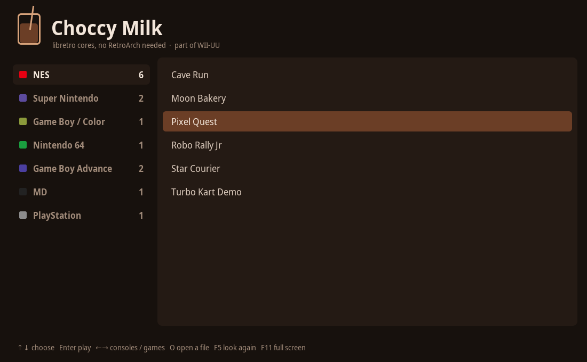
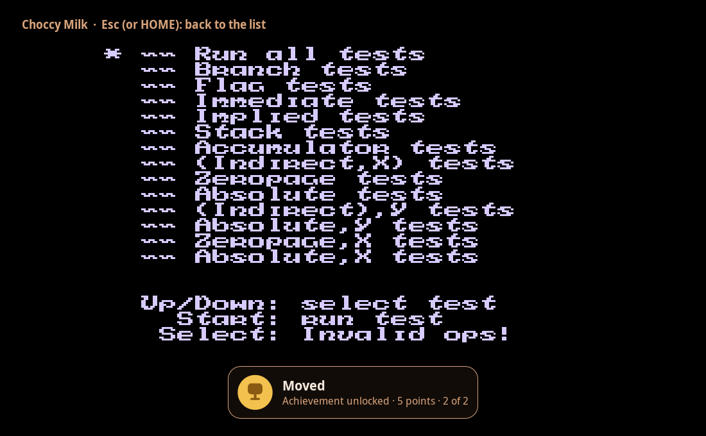

Libretro cores,
no RetroArch needed.
Choccy Milk plays your NES, SNES, Game Boy, N64, DS and PlayStation games itself, with the same cores RetroArch uses, in its own window. It downloads what it needs, unlocks RetroAchievements, and gets out of the way. It's WII-UU's built-in player, and a program of its own.

One small player, nothing else to set up
Choccy Milk loads a libretro core, hands it your game, and draws every frame itself. It doesn't need RetroArch, an emulator install or a Java of your own.
Gets its own cores
It uses RetroArch's cores if RetroArch is installed. Otherwise it downloads the right core from the libretro buildbot the first time you play a console.
Brings its own Java
The player runs on Java 22 or newer. If your computer has none, it downloads one once (Eclipse Temurin, about 50 MB) and then starts the game by itself.
RetroAchievements
Sign in once and achievements unlock while you play, with a trophy card when you earn one. How it works.
Pixels as they are
The picture is drawn at the game's own shape with whole pixels, no smoothing. Sound plays at 48 kHz and is converted from the core's rate, so the pitch is right.
Native everywhere
Linux, Windows and macOS on x86-64 or ARM. On an Apple Silicon Mac it runs natively even when WII-UU itself runs through Rosetta.
Shares WII-UU's games
It reads the same ROM folders and settings as WII-UU, so saves, cores and achievements carry over. Each game runs in its own process, so a crashing core can't take the window with it.

Achievements, unlocked while you play
Choccy Milk checks RetroAchievements itself, the same way RetroArch does: it reads the game's memory every frame with a Java port of rcheevos, RetroArch's achievement library.
- Press F2 in Choccy Milk, or open WII-UU's Settings → Games → RetroAchievements account, and enter your user name and password. Only the sign-in token it gets is kept, not the password.
- Start a game. A card shows how many of its achievements you already have.
- When you earn one, a trophy card appears and it's on your RetroAchievements profile. In WII-UU, the phones get a notice too.
What it plays
Every console with a libretro core that draws in software. Cores that need OpenGL or Vulkan play in RetroArch from WII-UU instead.
| Console | Cores, best first | Achievements |
|---|---|---|
| NES | Mesen, Nestopia, FCEUmm, QuickNES | yes |
| Super Nintendo | Snes9x, bsnes | yes |
| Game Boy / Color | SameBoy, Gambatte, mGBA | yes |
| Game Boy Advance | mGBA, VBA Next, gpSP | yes |
| Nintendo 64 | Mupen64Plus-Next, ParaLLEl N64 (software renderer, on every processor core) | yes |
| Nintendo DS | melonDS DS, melonDS, DeSmuME | yes |
| Master System | Genesis Plus GX, PicoDrive, SMS Plus | yes |
| Mega Drive / Genesis | Genesis Plus GX, PicoDrive | yes |
| PlayStation | PCSX ReARMed (software rendering) | not yet |
| GameCube, Wii, PSP, PS2, Dreamcast | need OpenGL or Vulkan: these play in RetroArch | – |
Get it
Three ways in, all the same player.
On its own
Download ChoccyMilk.jar and double-click it, or start it from a terminal. It needs Java 17 or newer to open; the newer Java for the games comes by itself.
With WII-UU
The WII-UU installer adds it as choccymilk, with a menu entry on Linux. WII-UU's updates keep it current.
Inside WII-UU
Turn on Settings → Games → Play with Choccy Milk. Games then play inside WII-UU's menu window, with your phone as the GamePad.
# the game list (WII-UU's ROM folders: ~/WiiUU/roms/nes, snes, gb, n64, ...)
java -jar ChoccyMilk.jar
# play a file right away
java -jar ChoccyMilk.jar "Some Game.sfc"
# another settings folder (default: ~/.wiiuu, shared with WII-UU)
java -jar ChoccyMilk.jar --home ~/choccyControls
Keyboard, mouse and USB or Bluetooth controllers (controllers on Linux). In WII-UU, your phone is the controller.
In the list
- ↑ ↓
- choose
- ← →
- consoles / games
- Enter
- play (or double-click)
- O
- open any game file
- F5
- look for new games
- F2
- RetroAchievements sign-in
- F11
- full screen
In a game
- ←↑↓→
- D-pad
- X Z S A
- A, B, X, Y
- Q W · E R
- L, R · ZL, ZR
- Enter · Space
- Start · Select
- Esc
- save and go back to the list (HOME on a controller)
N64 on a Raspberry Pi 5
The N64 recompiler needs 4 KB memory pages, and the Pi 5's default kernel uses 16 KB. Add kernel=kernel8.img to /boot/firmware/config.txt and restart. Without it, Choccy Milk falls back to the interpreter by itself, which is several times slower, and says so. The log, ~/.wiiuu/logs/, shows how fast a game runs every 10 seconds.
Questions
Do I need RetroArch?
No. Choccy Milk loads the cores itself. If RetroArch is installed, it uses the cores RetroArch already has; if not, it downloads them into ~/.wiiuu/choccy/cores.
Which Java do I need?
Java 17 or newer to open the program. Games run on Java 22 or newer, and if your computer has none, Choccy Milk downloads one once into ~/.wiiuu/choccy/jre.
Where are my saves?
In ~/.wiiuu/saves/<console>, written every 30 seconds and when you leave a game. WII-UU uses the same folder, so a game saved in one continues in the other.
Does it do hardcore achievements?
No, softcore only. Unlocks show on your RetroAchievements profile as softcore.
Why can't it play GameCube or PSP?
Those cores draw with the graphics chip (OpenGL or Vulkan), and Choccy Milk draws in software. WII-UU plays them in RetroArch instead, and switches a console over by itself the first time a core asks for OpenGL.
Something doesn't work. Where do I look?
Each console has a log in ~/.wiiuu/logs/ with the core's messages, the speed, and what happened with achievements (lines starting with [achievements]). Starting Choccy Milk with CHOCCY_DEBUG=1 logs everything the core asks for.